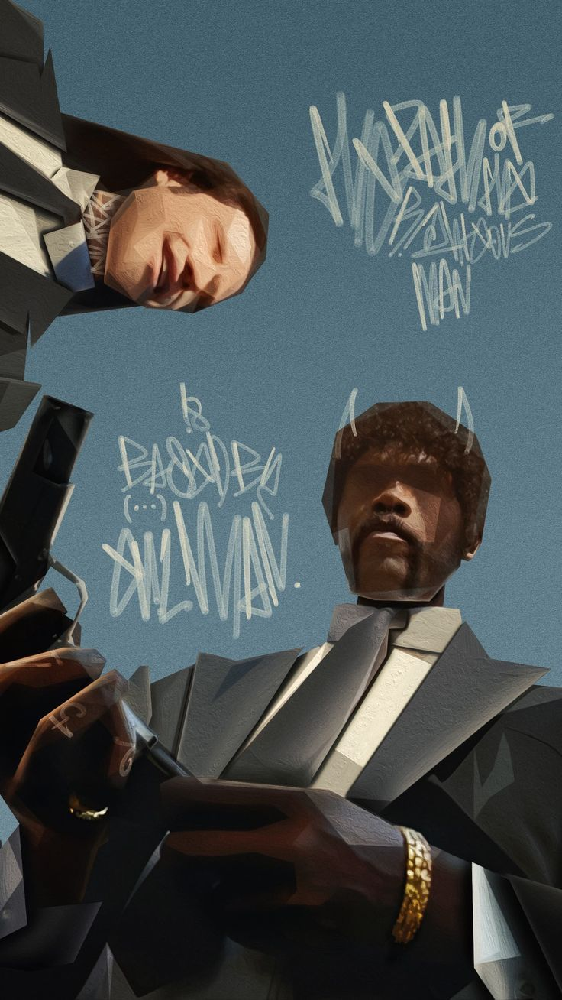
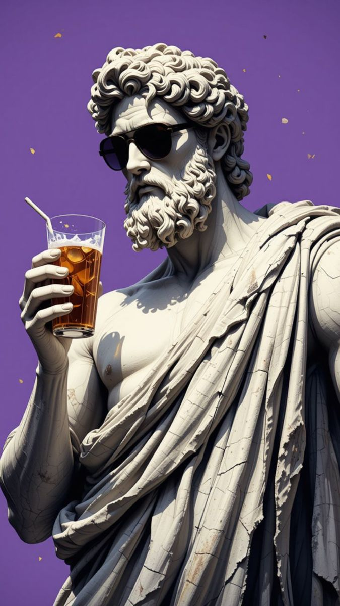
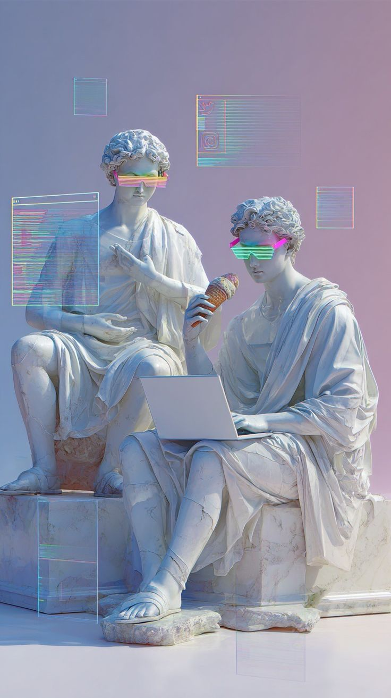
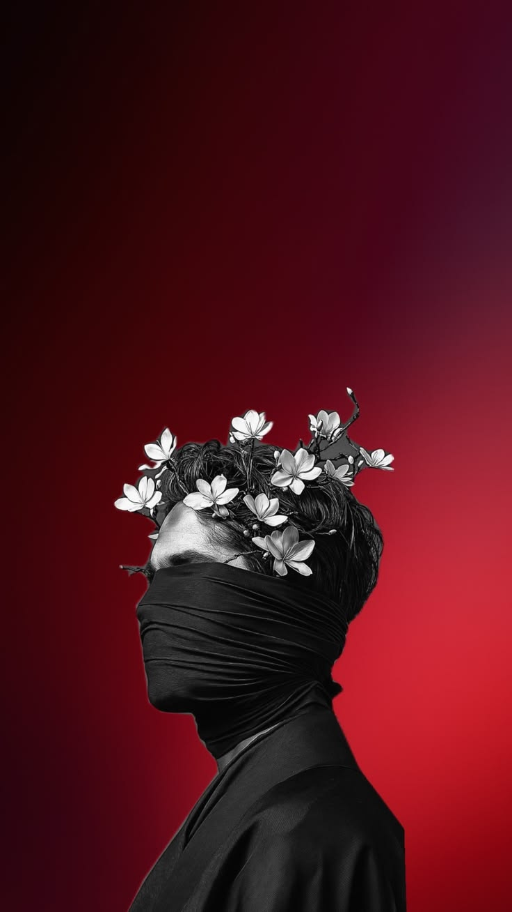
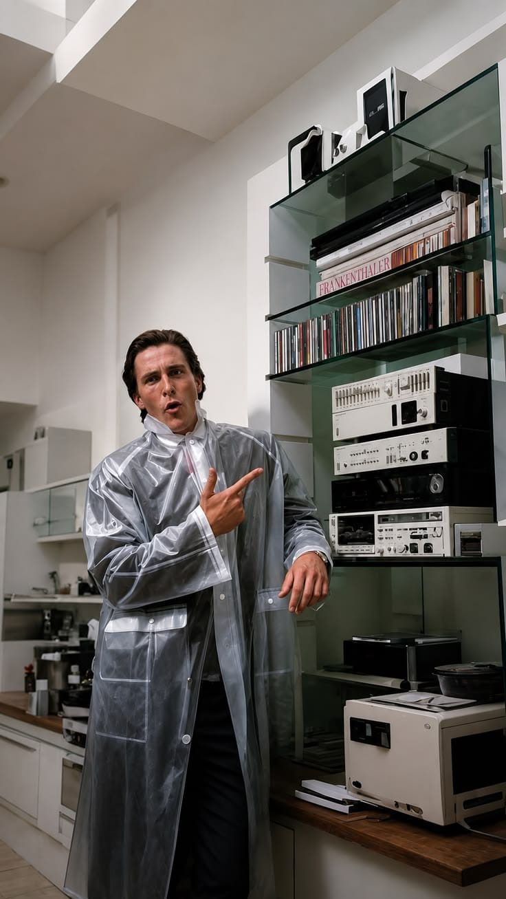

OriginalASCII‹ ›
> 01 / CINEMA / 180 COL
Two perspectives.
Sharp silhouettes. A scene rebuilt in characters.
/ IMAGE → CHARACTERS
Turn your images into text with texture. Set the detail, keep the colors, and make something worth sharing.
Free · No signup · On your device · TXT / PNG / SVG

OriginalASCII/ YOUR CREATIVE WORKBENCH
01 Upload / 02 Refine / 03 Export
Drop, paste, or choose a JPG, PNG, WebP, or GIF. Your file stays right here.
> SAMPLE LOADED / marble-break.png / processed locally
PNG and SVG keep the colored ink. TXT uses a monochrome character set.
Brighter colored characters on black.
Your image is yours. Conversion happens locally — no image upload, no account required.
/ FIVE IMAGES. NEW INTERPRETATIONS.
A familiar shape. An entirely new texture. Slide between the two, then find your own interpretation.

OriginalASCII> 01 / CINEMA / 180 COL
Sharp silhouettes. A scene rebuilt in characters.

OriginalASCII> 02 / REMIX / 150 COL
Marble meets neon. Every detail finds a new alphabet.

OriginalASCII> 03 / PORTRAIT / 150 COL
A floral silhouette. A red field. A different kind of portrait.

OriginalASCII> 04 / PHOTOGRAPHY / 200 COL
A listening room, translated line by line.
Images supplied for this project. Actual ASCII previews, converted from the source files in this studio.
/ FIND A HOME FOR YOUR CHARACTERS
From your project's first impression to your next cover image. Start with a size that fits.
01 / EDITORIAL & COVERS
A character-built image for an essay, newsletter, or digital cover. Keep your headline outside the artwork so it stays readable.
PNG and SVG preserve your colors and character spacing.
Find your settings ↗02 / OPEN SOURCE
Turn a portrait into a text-sized study. A fenced code block keeps its spacing and proportions in a README.
03 / CHATS & TERMINALS
A sculptural loop stays recognizable at just 56 columns. Clear geometry works better than a busy photograph at this scale.
Text formats preserve the characters. Image formats preserve the appearance. Choose for the place you're sharing.
/ OPEN. EXPLORE. EXPORT.
Nothing to install. Just an image, a little curiosity, and a few characters.
Choose a file, drop it here, or paste from your clipboard.
Explore widths, character sets, and tonal balance.
Copy the text, or download a TXT, PNG, or SVG.
/ LESS IN THE WAY. MORE IN YOUR HANDS.
A considered set of tools. Enough control to make every line yours.
Your browser does the conversion. Your image files never need to reach a server.
Change a setting, see the difference. No generate button between you and the result.
Copy plain characters or export TXT, PNG, and SVG straight from the studio.
Six character sets, from simple punctuation to colored ink and Unicode blocks.
Keep the source's sampled colors, or strip everything back to monochrome.
Download the MIT-licensed source, inspect the conversion, and make this studio your own.
Runs in modern browsers with Canvas support. GIF imports use the first frame.
/ A FEW GOOD STARTING POINTS
Every image is different. Start with a recipe, then trust your eye.
A small detail that makes a digital space feel like yours.
Project marks, README headers, and a signature in your code comments.
Terminal greetings, forum signatures, and little messages for your community.
Editorial covers, digital posters, and visual experiments with a different texture.
/ A FEW MORE LINES
The studio samples your image into a grid. Each cell's brightness chooses a character — from empty space to a dense mark. Color mode also keeps the sampled color for each cell.
No. Your file is read and converted in your browser. The website itself loads over the internet, but your conversion images are never sent to a server.
JPG, PNG, WebP, and GIF files that your browser can decode. GIF imports use the first frame; animated export is not supported.
TXT stores characters and line breaks, without visual styling. Use PNG or SVG when you want to preserve both color and spacing.
Increase the width and choose Detailed. Then adjust contrast a little. Simple images often look stronger at a lower width — more characters aren't always better.
Text cells are usually taller than they are wide. The studio compensates when it samples the image. Adjust Cell aspect under Advanced tuning, or export PNG/SVG to lock the appearance.
Yes. Source in the navigation downloads this site's MIT-licensed code. Unzip it, serve index.html with a local web server, and build your own version.